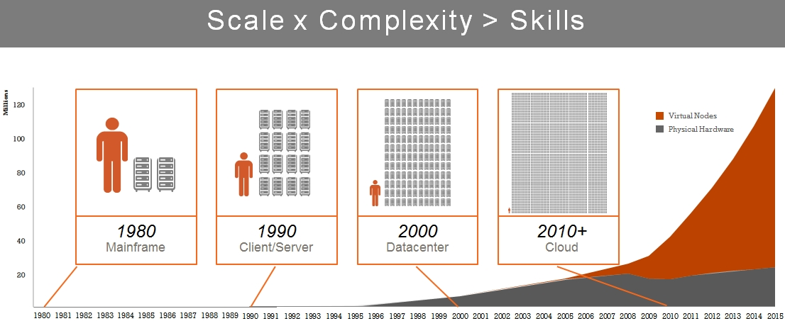
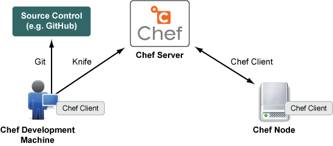

"I didn't change anything. [2 hours later] Well, yeah, I changed that." "It works on my machine." "We just hired somebody new." "Here's your new laptop. Spend a day or two setting it up like your old one. "We need to rebuild that server." "We're doing a deployment. On Friday. At 5pm."
Cowboys "Fuck it. We'll do it live." Laziness Expediency Broken windows Heisenberg Endless, time eating bullshit, tracking down changes, differences, etc. Michael Denny
Ask for a complete list of the differences between your dev and production environments. How do you know you found them all? How will you know when that list changes?
Cheap, utility computing (AWS) + Short time to market (Rails) + Web scale (ZOMG! We went viral!) = Big scaling issues for small teams with no budget And for everybody else: 
Division between infrastructure and application now blurred or artificial Same is true of the division between developers and system administrators If you own a computer, you're a sysadmin. Everything else is a matter of scale. If you maintain vhosts in Apache, or DNS entries, you're a dev. Developers share operational responsibilities. Sysadmins can think strategically. Cooperation. Kumbaya. This is not new for most webdevs. Now it has a name.
We have tools to design, build, deploy, and maintain complex software. Every piece of software is unique, but we use standard patterns and tools to make it. We can use those same tools to build IT infrastructure the way we build software. We can model, build, deploy, and manage infrastructure using mature tools. A lot of our infrastructure is code these days anyway. Might as well use coding tools.
Repeatability – Known inputs, known outputs Automation – Software deployment tools Agility – Change, forward or back, is cheap Scalability – Repeatability + Automation Reassurance – live documentation Disaster recovery – bare metal + code Auditing – what changed, when, by whom?
Tiny cycle time – wide change is as cheap as narrow change Testable – code can be tested automatically Verifiable – current state can be queried Higher quality – continuous improvement, not continuous troubleshooting Predictable – testable + verifiable Lower stress – we've done this 100 times
Modularity – break it down; eliminate overlap Cooperation – encourage reuse instead Composability – Lego Extensibility – easier to enhance small stuff Flexibility – small scope + unlimited power
Repeatability – known inputs, known outputs Declaration – what, not how Abstraction – function, not implementation Idempotence – run many times; change once Convergence – services come into line with policy; system tends to correctness
Configuration server (Chef Server) Infrastructure parts are clients (Chef Client) Workflow: Write configuration code locally Push configuration code to the Chef server Node phones home; configuration updated from server Lather, rinse, repeat
Modern. CFEngine, I'm looking at you. Cross-platform Free & Open Source, with support for hire Very popular; big community; getting bigger Under active development I don't have to say "Puppet" in meetings. All Ruby, all the time
Chef Server Knife (CLI client) WebUI Nodes and Chef Client Recipes Cookbooks Roles and Environments Users and Organizations 
Nodes are the systems you are managing with Chef. Nodes are typically servers. Nodes are why we want to use Chef. Clients are things which connect to the Chef server, using the Chef API. Clients include nodes configured through Chef, as well as workstations which are used to manage Chef.
Recipes are the files where you write and store chunks of configuration. Recipes get applied to nodes. This is were the awesome lives. The configuration is code. The code can be version controlled. All the tools we use to manage code can be used to manage configuration.
A recipe is really a "policy". Applying a recipe to a node brings the node into compliance with policy as defined in the recipe. Recipes only do stuff if stuff needs to be done. Recipes can be applied as often as you'd like, without damaging the node. When in doubt, apply your recipe(s). Your node(s) will now be in a known state.
Cookbooks are exactly what they sound like: collections of recipes. They can also contain supporting files, such as: files containing attributes configuration file templates files to be uploaded as-is The MySQL cookbook for example, contains recipes for both client and server, plus an attributes file to set sane defaults.
Cookbooks can be authored by anyone with basic programming skills. They can be written without storing any details about a particular deployed environment. This means they can be shared safely and reused across organization and company boundaries. http://community.opscode.com/cookbooks https://github.com/opscode-cookbooks
Roles are collections of configuration applied to nodes with something in common. The role "high_school_file_server" would keep configuration in sync across all its members. Nodes can have more than one role, and roles can stack or nest together. We might have a node with the roles "base", "ubuntu", "webserver", "php", "wordpress", "my_site".
Environments are the other way we group things. These "things" are mostly specific values within the configuration of a node, such as a cookbook version number. Environments typically include "production", "staging", "development", and "testing".
Two nodes in the same role, but different environments, might be running two different versions of the same cookbook. One node, in the "production" environment, runs a stable version of the "my-application" cookbook. The other node, in the "development" environment, runs an untested version. Everything else is the same, so there are no surprises when we move from dev to prod.
Users are what you think they are: humans who connect to Chef. Like clients, they have keys that they can use to connect to Chef programmatically. Users also have passwords that they can use to log in to the various web pages that the Chef server exposes.
Users can be associated with organizations. Your organization may represent your entire company, or the department you work in, or any other grouped set of infrastructure you plan on managing. Membership gives you certain rights to interact with and manage your organization. Users can be associated with more than one organization.